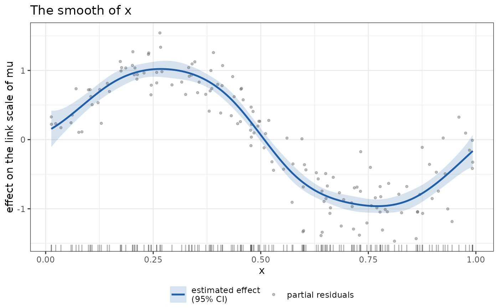
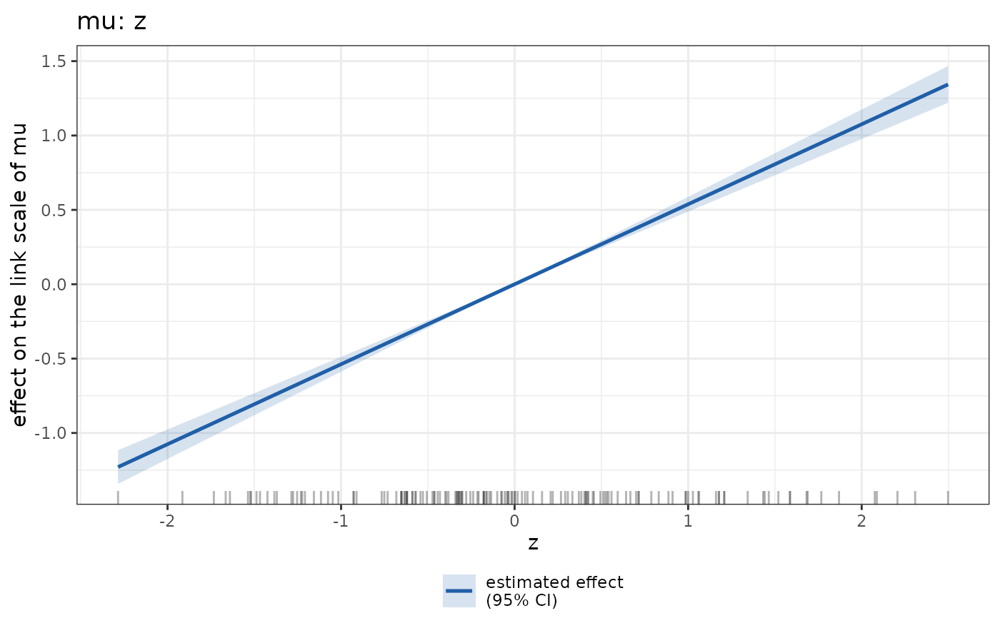

autoplot() returns a ggplot2 object that shows one aspect of a
StatmodFit(), and plot() prints that object and returns it invisibly.
The graph is chosen by plot_type, an object inheriting from plot_type:
with
term, a graph of that term (plot_effect()whenplot_typeis not given, or the term'sdefault_plot());with a model_plot or a diagnostic_plot type, a graph of the whole fit, for which
termandparamare not given;with neither, the four diagnostic graphs of
diagnostics()composed in one figure.
Usage
# S3 method for class 'StatmodFit'
autoplot(
object,
term = NULL,
param = NULL,
plot_type = NULL,
data = NULL,
legend = NULL,
...
)
# S3 method for class 'StatmodFit'
plot(
x,
term = NULL,
param = NULL,
plot_type = NULL,
data = NULL,
legend = NULL,
...
)Arguments
- object, x
A
StatmodFit().- term
The name of a term or of a variable, a single string, or
NULL.- param
The name of an equation (a parameter of the family), or
NULL.- plot_type
An object inheriting from plot_type, or
NULL.- data
The data frame of the fit, or
NULL.- legend
NULL,TRUEorFALSE.NULLleaves each graph with the propertylegendof its type;TRUEorFALSEsets it on every graph drawn, the four diagnostic graphs included, so thatplot(fit, legend = FALSE)draws them without legends.- ...
Unused.
Value
autoplot() returns a ggplot2 object (a patchwork object for the
composed diagnostics); plot() returns the same object invisibly, after
printing it.
Details
term is the name of a term as summary.StatmodFit() prints it (spaces
are ignored, so "random(~1|id)" names random(~1 | id)), or the name of
a variable. A variable selects every term of the equation in which it
appears and, within the linear part, the columns that involve it, so that
with y ~ x + s(x) the variable x draws the sum of the linear and the
smooth contribution. param is the equation; it may be omitted when the
term belongs to one equation only.
The fit does not keep its data, so a graph that reads the covariates
(partial residuals, a grid over a covariate, residuals against a
covariate) requires the fitting data as data, and signals an error
without it.
The data of the graph are in the returned object (p$data of each layer,
or ggplot2::layer_data()), and plot_data() returns them without the
graph.
See also
plot_type for the list of graphs, diagnostics(),
plot_data()
Examples
set.seed(1)
dd <- data.frame(x = runif(150), z = rnorm(150))
dd$y <- sin(2 * pi * dd$x) + 0.5 * dd$z + rnorm(150, sd = 0.3)
fit <- statmod(y ~ z + s(x), distributions7::gaussian1_distrib(), dd)
p <- ggplot2::autoplot(fit, term = "s(x)", data = dd)
p + ggplot2::labs(title = "The smooth of x")

ggplot2::autoplot(fit, term = "z", plot_type = plot_effect(residuals = FALSE),
data = dd)
